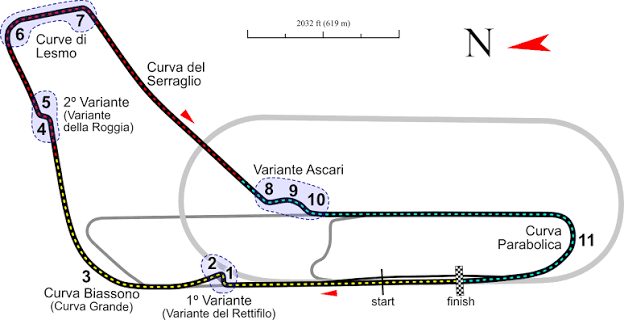

Leclerc at the Parabolica
Charles Leclerc is one of the fastest drivers in Formula 1, but even he has struggled at one corner in particular: the Parabolica at Monza. This site looks at two of his crashes there, one in 2020 and one in 2026, exactly six years apart. Using race data, it compares what went wrong each time and asks why this corner is so tricky.
What Is the Parabolica?
The Parabolica is a long, fast right-hand corner at the end of the Monza circuit in Italy. Drivers carry a lot of speed into it, which makes it easy to lose control if they get it slightly wrong.

What's on This Site
The The Two Crashes page explains what happened in each crash. The Comparing the Data page uses speed, throttle, and car position to compare them side by side. Use the links to explore.